Every igloo is hand-designed: its plain doorway (1 wide, 2 tall) at the south, every bed, chest and light where it
belongs. Pick the ones you want; they're joined into villages afterwards. In the game:
/dross showcase hunter_igloos (the decorations stand in rows behind them).
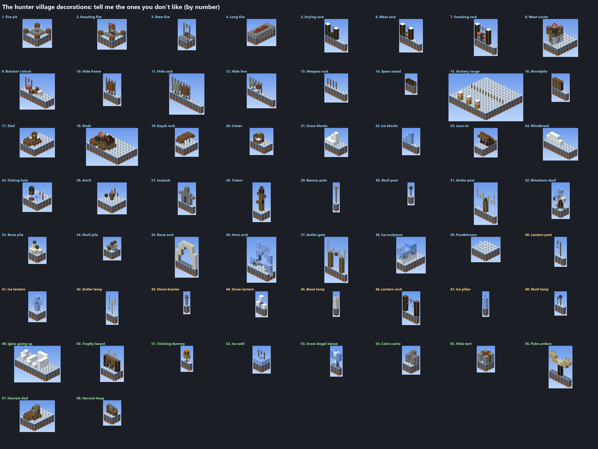
A loner who sets snares for hares and foxes out on the ice and comes back only to sleep and skin his catch.
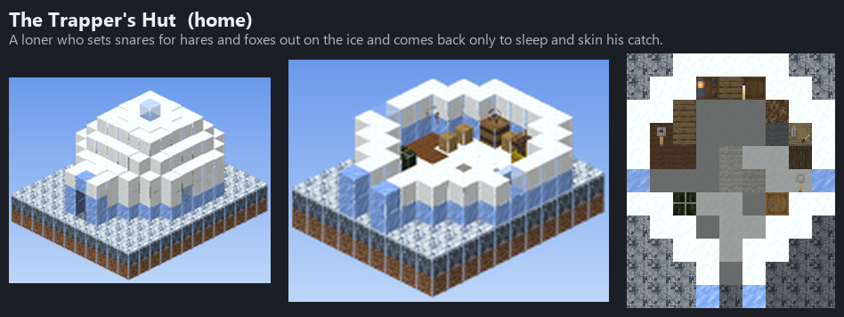
A hunter, his wife and their two children: the parents' beds at the back, the children's along the wall by their shared chest, and a warm kitchen corner.
The oldest of the hunters, keeper of the stories: his books and the skulls of hunts long past, and a blue lamp over the lectern he reads them from.
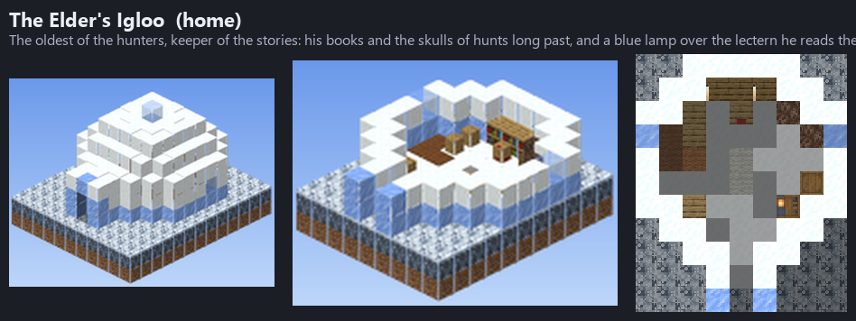
Two brothers who hunt as one: every bed, chest and spear of theirs has its twin across the room.
The village's lookout: a wide window of clear ice at the back to watch the plain from, his maps, and his bed out of the draught.
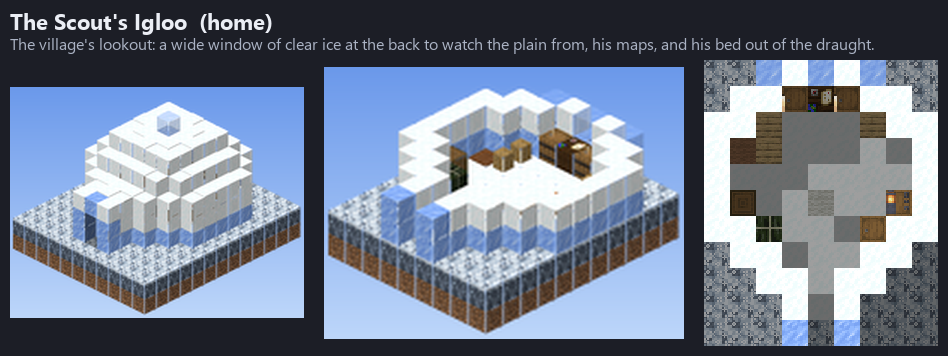
A young hunter still learning the bow: targets against a bale of hay at the back to practise on, his fletching table, and a small bed.
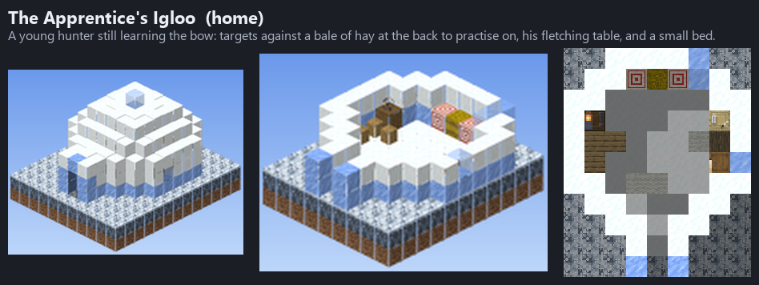
The village's winter store: barrels stacked two high down both walls, chests at the back, meat hung from the roof to keep, crates of Frostroot and baskets of Rimeberries, and blocks of packed ice to keep it all cold. Lanterns hang over the aisle.
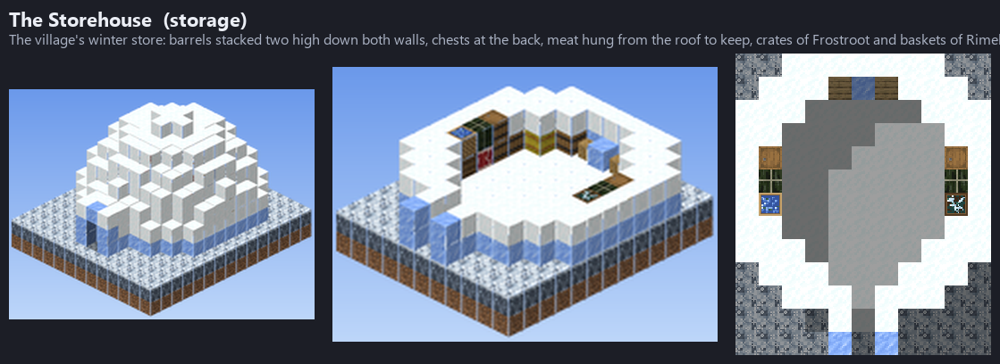
Where the village eats: a fire in the middle under its smoke vent, joints of meat hung round it to smoke, stew pots either side, smokers and chopping blocks at the back, a crate of Frostroot and a basket of Rimeberries by the way in.
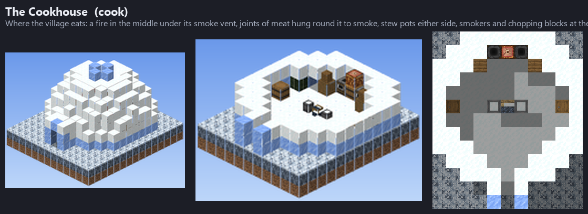
Where the hunting party sleeps between hunts: twelve beds in two rows, a nightstand between each pair, footlockers at the ends, and two guards in blue leather either side of the chest in the alcove at the back. A lantern hangs in each of its three domes.
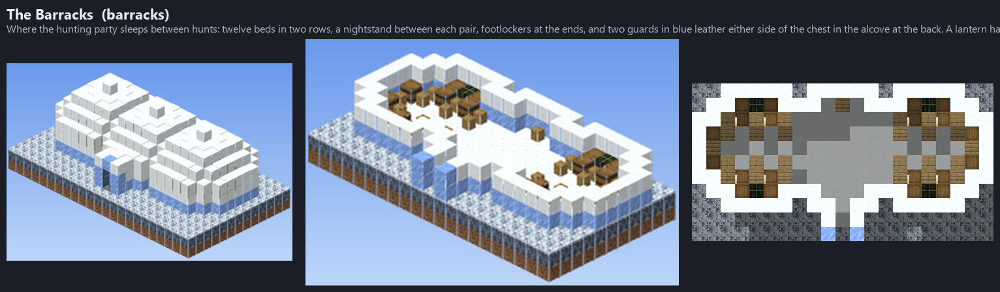
Where the bows, arrows and spears are made: the fletcher's, the grinder's and the loom along the back, a work table in the middle under its lamp, spears waiting for their heads along the walls.
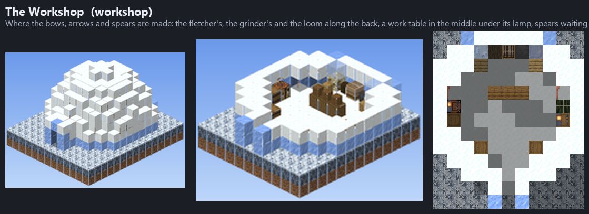
Where the village meets: a fire in the middle under its vent, benches round it, the Huntsman's banners and the hall's trophy at the back, skulls on posts round the walls, lanterns either side of its wide way in.
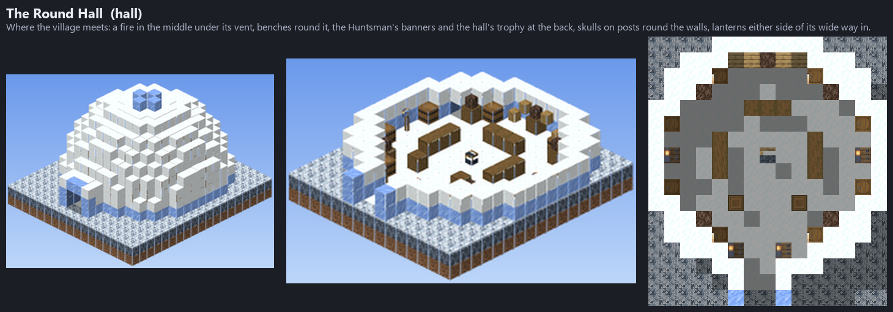
The feast hall: a long table down the middle with benches either side, a fire under a vent in each end dome, the Huntsman's banners on the end walls, four guards in blue leather facing the table, lanterns over it and either side of the wide way in.
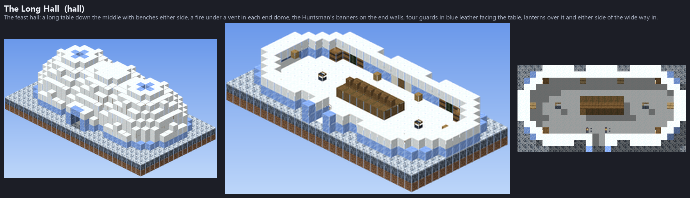
A little hut over a hole cut through the ice: a stool by the water, the day's catch drying on the rack, a barrel of fish and a lantern to fish by in the long night.
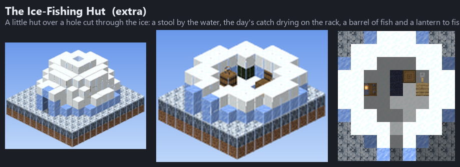
Where the hides of the hunt are cured: soaking vats along the back, hides stretched on the walls to dry, scraping benches in the middle under the lamps, barrels of salt and furs on the drying posts.
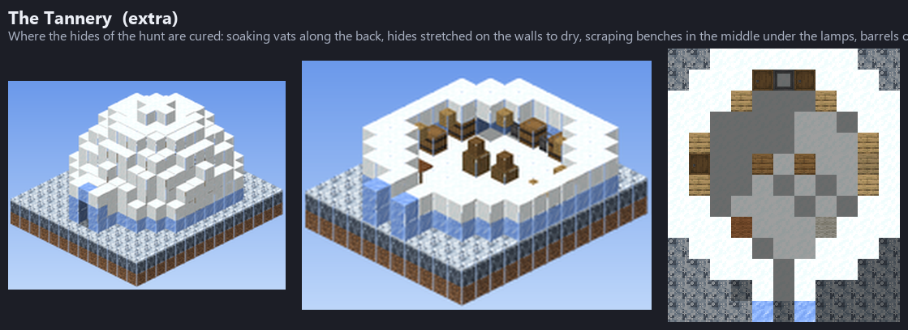
The hunters' shrine to the Ice Necromancer, the Snow Angel they serve, three domes joined: in the great middle one its statue of snow and ice, wings spread and a blue light for a halo, the altar with its offering and candles before it, cushions to kneel on either side of the aisle; on the west the Hall of the Fallen, the books and skulls of the hunters who never came back; on the east the Offerings Chapel, barrels and chests of what the hunt gave, meat laid out, candles burning on bones. It stands alone in a village, joined to no other igloo.
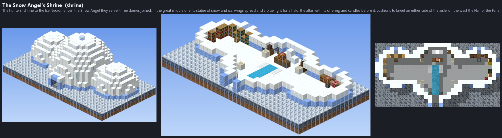
His great lodge: his seat at the back facing the door under his antlers, the fire and its benches, his table of roasted meat, his bedroom on the west with its triple bed, the armoury on the east, his banners outside.
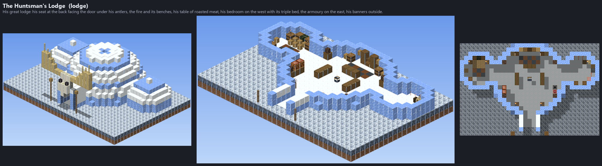
The Alpha Moose's barn: its stall of straw with feed and water troughs, the tack wall, feed and a chest at the back lit by lanterns, a hay loft with a chest up the ladder, and its corral beside it, the skulls on the posts facing out.
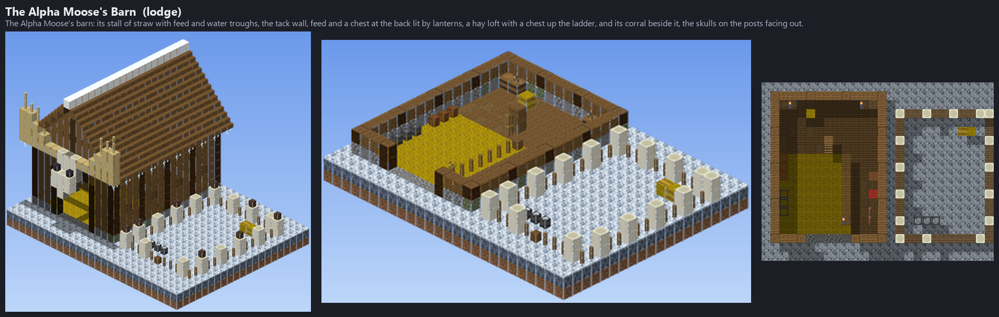
Where the village grows its Frostroot: two domes end to end, four long beds either side of a water channel down the middle, lanterns hung over the channel to grow them by, crates of the harvest, compost bins and barrels along the walls.
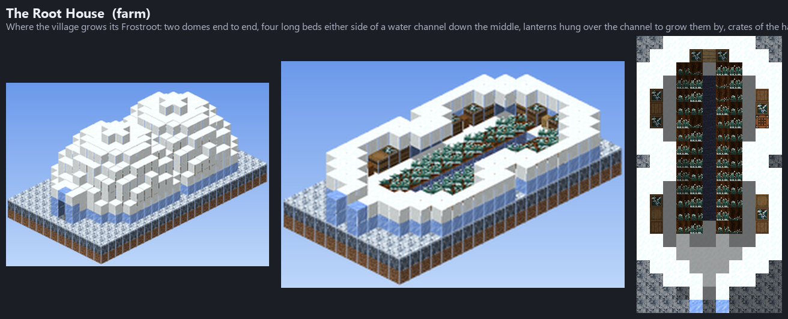
Where the village grows Snow Lichen, the moose's winter feed: one round dome, its beds in two rings round a pool of water, a lantern over each corner of the walk between them, the harvest's barrels, bins and chests against the wall.
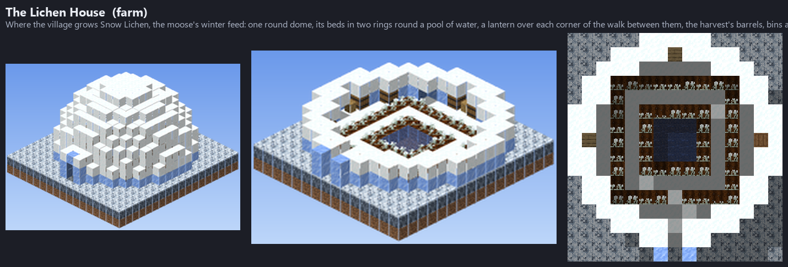
The village's berry patch, out in the open: three hedges of two-block Rimeberry Bushes on Hoarfrost, windbreaks of snow round three sides, lantern posts at the ends of the paths, and the pickers' barrels and baskets by the way in.
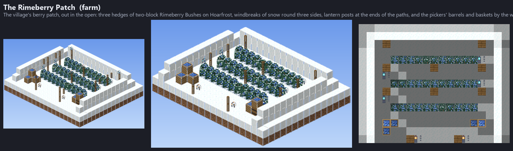